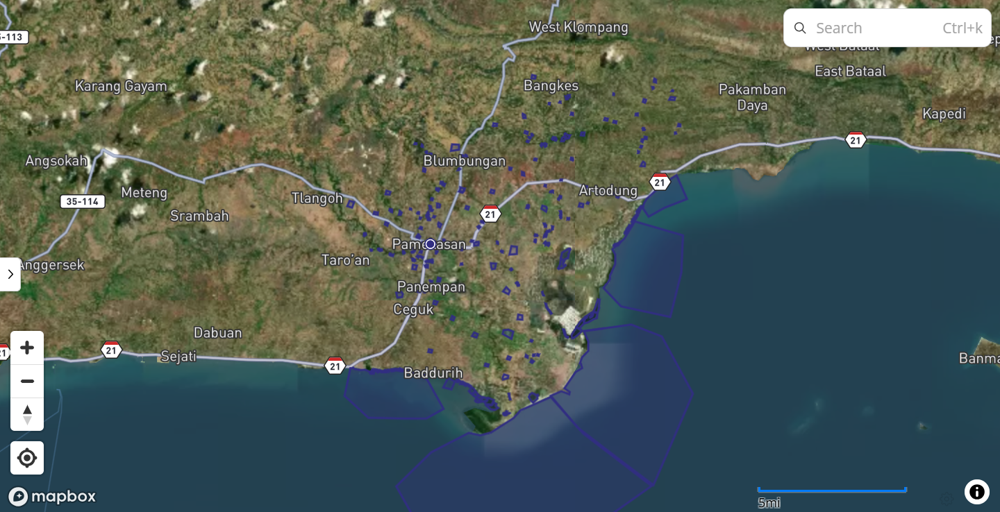
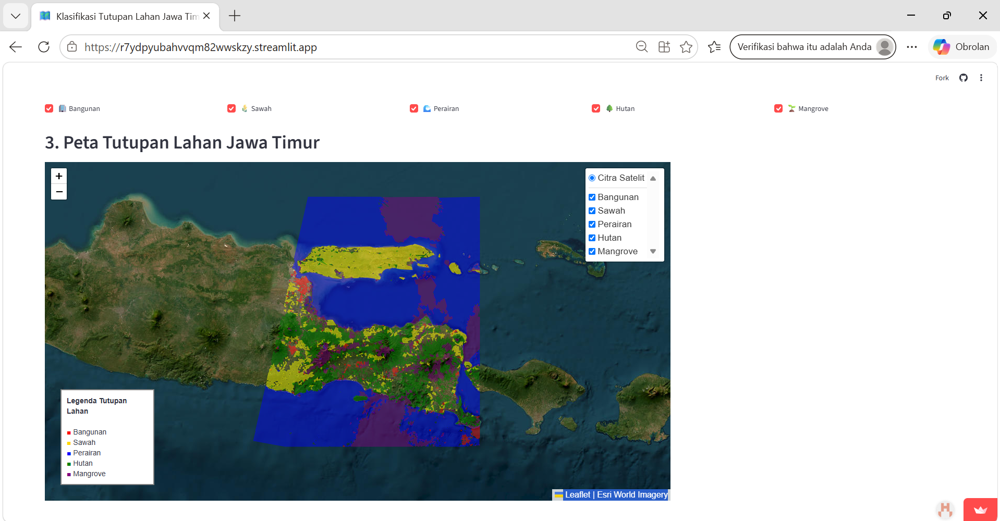
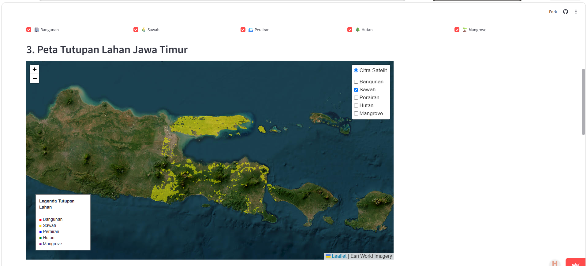

KLASIFIKASI TUTUPAN LAHAN JAWA TIMUR MENGGUNAKAN CITRA SENTINEL-2 DAN ALGORITMA RANDOM FOREST#
1. Business Understanding#
1.1 Latar Belakang#
Tutupan lahan merupakan informasi yang penting untuk mengetahui kondisi permukaan bumi. Informasi tersebut dapat digunakan untuk melihat persebaran area terbangun, lahan pertanian, perairan, hutan, dan hutan mangrove.
Wilayah Jawa Timur memiliki wilayah yang cukup luas sehingga identifikasi tutupan lahan secara manual membutuhkan waktu yang cukup lama. Oleh karena itu, diperlukan suatu metode yang dapat melakukan klasifikasi secara otomatis berdasarkan informasi yang terdapat pada citra satelit.
Pada proyek ini digunakan citra Sentinel-2 sebagai sumber data dan algoritma Random Forest untuk melakukan klasifikasi tutupan lahan.
Data training dibentuk melalui proses digitasi polygon pada wilayah Kabupaten Pamekasan. Hasil digitasi tersebut kemudian digunakan untuk melatih model Random Forest.
Model yang telah dilatih selanjutnya diterapkan pada citra Sentinel-2 wilayah Jawa Timur untuk memperoleh hasil klasifikasi tutupan lahan.
1.2 Tujuan#
Tujuan dari proyek ini adalah:
Mengidentifikasi tutupan lahan di wilayah Jawa Timur.
Memanfaatkan citra Sentinel-2 sebagai sumber data.
Membentuk data training melalui digitasi polygon di wilayah Pamekasan.
Melatih model klasifikasi menggunakan Random Forest.
Menerapkan model hasil training pada wilayah Jawa Timur.
Mengklasifikasikan tutupan lahan menjadi lima kelas.
Membuat hasil klasifikasi dalam bentuk GeoJSON.
Menampilkan hasil klasifikasi di atas citra satelit.
Menyediakan fitur filter berdasarkan kelas tutupan lahan.
Menyajikan hasil klasifikasi dalam aplikasi Streamlit.
1.3 Fokus Proyek#
Fokus utama proyek adalah menghasilkan informasi mengenai persebaran tutupan lahan Jawa Timur melalui klasifikasi citra Sentinel-2 menggunakan model Random Forest.
Hasil akhir proyek berupa peta interaktif yang dapat menampilkan lima kelas tutupan lahan dan informasi luas masing-masing kelas.
2. Pembentukan Data Training#
2.1 Wilayah Training#
Data training pada proyek ini diperoleh dari wilayah Kabupaten Pamekasan.
Pamekasan digunakan sebagai wilayah training karena proses pembentukan polygon dilakukan secara manual pada wilayah tersebut.
Polygon hasil digitasi digunakan untuk memberikan label terhadap objek tutupan lahan yang terdapat pada citra.
Dengan demikian, terdapat perbedaan antara wilayah training dan wilayah klasifikasi:
Tahapan |
Wilayah |
|---|---|
Digitasi polygon |
Pamekasan |
Data training |
Pamekasan |
Training Random Forest |
Data hasil digitasi Pamekasan |
Penerapan model |
Jawa Timur |
Hasil klasifikasi |
Jawa Timur |
2.2 Kelas Hasil Digitasi#
Polygon dibuat untuk mewakili lima kelas tutupan lahan:
No |
Kelas |
Keterangan |
|---|---|---|
1 |
Bangunan |
Area terbangun |
2 |
Sawah |
Lahan pertanian/sawah |
3 |
Perairan |
Laut, sungai, danau, atau badan air |
4 |
Hutan |
Hutan/vegetasi daratan |
5 |
Mangrove |
Vegetasi mangrove |
2.3 Hasil Digitasi#
Digitasi dilakukan dengan membuat polygon pada objek yang sesuai dengan kelas tutupan lahannya.
Setiap polygon kemudian digunakan untuk mengambil nilai piksel dari band Sentinel-2.

3. Data Preparation#
3.1 Ekstraksi Nilai Piksel#
Setelah polygon dibuat, dilakukan proses ekstraksi nilai piksel dari citra Sentinel-2. Setiap piksel memiliki nilai berdasarkan band yang digunakan.
Secara sederhana, satu piksel direpresentasikan sebagai:
[B02, B03, B04, B08, B8A, B11, B12]
Nilai tersebut kemudian dikaitkan dengan label berdasarkan polygon tempat piksel tersebut berada. Sebagai contoh: Nilai Band ↓ B02, B03, B04, B08, B8A, B11, B12 ↓ Polygon hasil digitasi ↓ Label = Sawah
Proses tersebut dilakukan untuk seluruh kelas.
3.2 Dataset Training#
Dataset training yang dihasilkan terdiri dari nilai band sebagai fitur dan kelas tutupan lahan sebagai target. Contoh struktur data:
B02 |
B03 |
B04 |
B08 |
B8A |
B11 |
B12 |
class |
|---|---|---|---|---|---|---|---|
4365.0 |
8087.0 |
10479.0 |
20204.0 |
20539.0 |
27053.0 |
23160.0 |
bangunan |
6154.0 |
9037.0 |
13618.0 |
17314.0 |
19936.0 |
27145.0 |
23953.0 |
bangunan |
4686.0 |
7799.0 |
11023.0 |
20080.0 |
19031.0 |
24844.0 |
21869.0 |
bangunan |
7687.0 |
10217.0 |
11377.0 |
14837.0 |
17799.0 |
23678.0 |
20834.0 |
bangunan |
11095.0 |
12288.0 |
15984.0 |
19117.0 |
18959.0 |
27931.0 |
25146.0 |
bangunan |
Data inilah yang digunakan sebagai input untuk proses training Random Forest.
4. Modeling#
4.1 Algoritma Random Forest#
Algoritma yang digunakan dalam proyek ini adalah Random Forest.
Random Forest merupakan algoritma machine learning yang menggunakan banyak decision tree untuk menghasilkan suatu keputusan klasifikasi.
Dalam proyek ini, Random Forest digunakan untuk mempelajari hubungan antara nilai spektral citra Sentinel-2 dengan kelas tutupan lahan.
Input model:
B02
B03
B04
B08
B8A
B11
B12
Target: Bangunan Sawah Perairan Hutan Mangrove
4.2 Proses Training#
Data hasil digitasi Pamekasan digunakan sebagai data training.
Alur proses training:
Data Training Pamekasan ↓ Nilai 7 Band Sentinel-2 ↓ Random Forest ↓ Model Terlatih
Model kemudian digunakan untuk memprediksi kelas tutupan lahan pada piksel citra Jawa Timur.
from sklearn.ensemble import RandomForestClassifier
model = RandomForestClassifier(
n_estimators=100,
random_state=42,
n_jobs=-1
)
model.fit(X_train, y_train)
print("Model Random Forest berhasil dilatih!")
5. Klasifikasi Wilayah Jawa Timur#
5.1 Penerapan Model#
Setelah proses training selesai, model Random Forest digunakan untuk melakukan klasifikasi terhadap citra Sentinel-2 wilayah Jawa Timur.
Setiap piksel valid diberikan prediksi berupa salah satu dari lima kelas tutupan lahan.
Alur prosesnya:
Model Random Forest Terlatih
↓
Citra Sentinel-2 Jawa Timur
↓
Ekstraksi nilai band
↓
Prediksi setiap piksel
↓
Kelas Tutupan Lahan
5.2 Jumlah Piksel Hasil Klasifikasi#
Hasil klasifikasi menghasilkan jumlah piksel sebagai berikut:
Kelas |
Jumlah Piksel |
|---|---|
Bangunan |
116.962 |
Sawah |
411.688 |
Perairan |
1.434.527 |
Hutan |
386.855 |
Mangrove |
575.576 |
Gambar 6. Jumlah piksel hasil klasifikasi setiap kelas.
5.3 Hasil Klasifikasi#
Hasil klasifikasi kemudian disusun menjadi layer spasial yang dapat ditampilkan pada peta.

6. Pembuatan Layer GeoJSON#
Hasil klasifikasi kemudian dikonversi menjadi data spasial dalam format GeoJSON.
GeoJSON digunakan untuk menyimpan informasi geometri dan atribut dari setiap kelas hasil klasifikasi.
Atribut utama yang terdapat pada GeoJSON adalah:
Atribut |
Keterangan |
|---|---|
class_id |
ID kelas |
class |
Nama kelas tutupan lahan |
geometry |
Bentuk/geometri objek |
Contoh:
class_id : 2
class : sawah
geometry : polygon
7. Visualisasi Peta#
Hasil GeoJSON kemudian ditampilkan sebagai layer di atas citra satelit menggunakan Leaflet melalui library Folium. Peta dasar menggunakan citra satelit, sedangkan hasil klasifikasi ditampilkan sebagai overlay. Dengan demikian, pengguna dapat membandingkan hasil klasifikasi dengan kondisi permukaan bumi yang terlihat pada citra satelit.
8. Filter Kelas Tutupan Lahan#
Aplikasi dilengkapi dengan fitur filter untuk memudahkan pengguna dalam melihat kelas tertentu.
Lima pilihan kelas yang tersedia adalah:
Bangunan
Sawah
Perairan
Hutan
Mangrove
Pengguna dapat mencentang atau menghilangkan centang pada kelas yang ingin ditampilkan.
Sebagai contoh, ketika pengguna hanya memilih kelas sawah, maka peta hanya menampilkan area yang diklasifikasikan sebagai sawah.

Fitur filter ini membuat peta menjadi lebih interaktif dan memudahkan pengguna dalam melakukan pengamatan terhadap persebaran kelas tertentu.
9. Evaluasi Model#
Evaluasi dilakukan untuk mengetahui kemampuan model Random Forest dalam melakukan klasifikasi.
Berdasarkan hasil pengujian model, diperoleh nilai:
Accuracy = 97,72%#
from sklearn.metrics import accuracy_score
y_pred = model.predict(X_test)
accuracy = accuracy_score(y_test, y_pred)
print("Accuracy:", accuracy)
print("Accuracy (%):", accuracy * 100)
Hasil output Accuracy:
Accuracy: 0.9771524771524771
Accuracy (%): 97.71524771524771
Nilai accuracy menunjukkan tingkat ketepatan model terhadap data pengujian yang digunakan dalam proses evaluasi.
Perlu diperhatikan bahwa data training berasal dari hasil digitasi wilayah Pamekasan, sedangkan model diterapkan pada wilayah Jawa Timur.
Oleh karena itu, nilai accuracy 97,72% merupakan hasil evaluasi terhadap data pengujian model dan tidak secara langsung menunjukkan bahwa seluruh wilayah Jawa Timur memiliki tingkat akurasi sebesar 97,72%.
Untuk memperoleh evaluasi akurasi khusus wilayah Jawa Timur, diperlukan data referensi atau ground truth yang independen dari wilayah Jawa Timur.
10. Implementasi Aplikasi Streamlit#
Hasil pengolahan kemudian dikembangkan menjadi aplikasi web menggunakan Streamlit.
Aplikasi digunakan untuk menyajikan hasil klasifikasi dalam bentuk peta interaktif dan informasi yang lebih mudah dipahami oleh pengguna.
Fitur Aplikasi#
Aplikasi memiliki beberapa bagian utama:
Business Understanding : Menjelaskan latar belakang, tujuan, dan fokus proyek.
Filter Kelas Tutupan Lahan : Pengguna dapat memilih kelas yang ingin ditampilkan.
Peta Tutupan Lahan Jawa Timur : Menampilkan hasil klasifikasi sebagai overlay di atas citra satelit.
Informasi Hasil Klasifikasi : Menampilkan luas masing-masing kelas.
Grafik : Menampilkan perbandingan luas tutupan lahan.
Evaluasi Model : Menampilkan hasil accuracy model.
Informasi Metode : Menjelaskan data, band, wilayah, algoritma, dan kelas yang digunakan.
12. Deployment#
Aplikasi yang telah dibuat kemudian di-deploy menggunakan Streamlit sehingga dapat diakses melalui browser.
Repository GitHub digunakan sebagai tempat penyimpanan source code dan file pendukung aplikasi.
Struktur file aplikasi:
jawatimur/
│
├── app.py
│
├── klasifikasi_jawa_timur_web_kecil.geojson
│
└── luas_klasifikasi_jawa_timur.csv
File app.py merupakan program utama aplikasi.
File GeoJSON digunakan sebagai sumber layer hasil klasifikasi.
File CSV digunakan untuk menyimpan informasi luas masing-masing kelas tutupan lahan.
Setelah repository terhubung dengan Streamlit, aplikasi dapat dijalankan dan diakses melalui halaman web.
Link Aplikasi Streamlit: https://r7ydpyubahvvqm82wwskzy.streamlit.app/
Kesimpulan#
Berdasarkan proyek yang telah dilakukan, dapat disimpulkan bahwa citra Sentinel-2 dapat digunakan sebagai sumber data untuk melakukan klasifikasi tutupan lahan dengan algoritma Random Forest.
Data training diperoleh melalui proses digitasi polygon pada wilayah Kabupaten Pamekasan. Polygon tersebut digunakan untuk membentuk data berlabel yang terdiri dari lima kelas, yaitu bangunan, sawah, perairan, hutan, dan mangrove.
Data training tersebut kemudian digunakan untuk melatih model Random Forest menggunakan beberapa band Sentinel-2, yaitu B02, B03, B04, B08, B8A, B11, dan B12.
Model yang telah dilatih kemudian diterapkan pada citra Sentinel-2 wilayah Jawa Timur. Hasil klasifikasi menghasilkan lima kelas tutupan lahan dengan jumlah piksel sebagai berikut:
Kelas |
Jumlah Piksel |
|---|---|
Bangunan |
116.962 |
Sawah |
411.688 |
Perairan |
1.434.527 |
Hutan |
386.855 |
Mangrove |
575.576 |
Hasil klasifikasi juga menghasilkan informasi luas:
Kelas |
Luas |
|---|---|
Bangunan |
263.997,94 ha |
Sawah |
929.885,42 ha |
Perairan |
3.240.326,33 ha |
Hutan |
873.192,83 ha |
Mangrove |
1.299.548,65 ha |
Hasil tersebut kemudian dikonversi menjadi GeoJSON dan ditampilkan sebagai layer di atas citra satelit menggunakan Leaflet/Folium.
Aplikasi juga dilengkapi dengan fitur filter kelas sehingga pengguna dapat menampilkan kelas tertentu, seperti hanya sawah, hutan, mangrove, bangunan, atau perairan.
Seluruh hasil kemudian dikembangkan menjadi aplikasi Streamlit dan di-deploy sehingga hasil klasifikasi dapat diakses melalui web.
Dengan adanya sistem ini, proses penyajian informasi tutupan lahan Jawa Timur menjadi lebih interaktif dan mudah dipahami. Sistem dapat memberikan gambaran awal mengenai persebaran tutupan lahan berdasarkan hasil klasifikasi citra Sentinel-2.